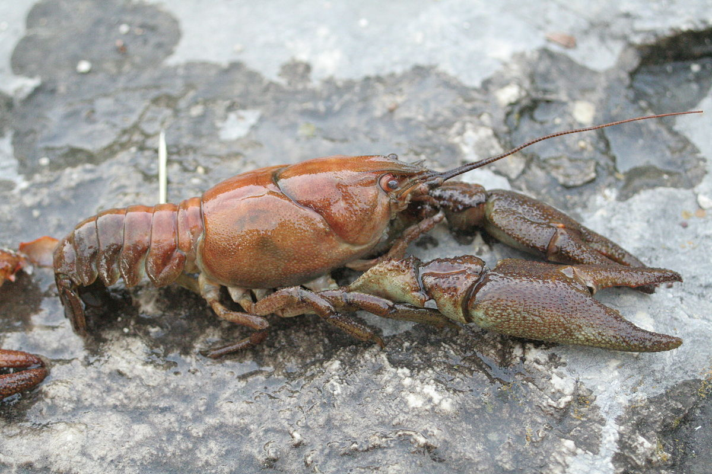
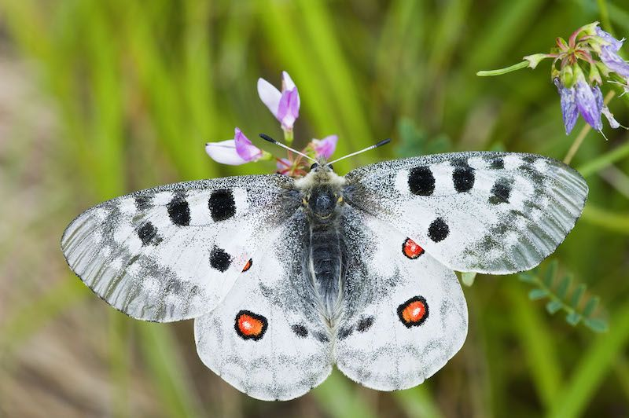

Base
Mamíferos
Los mamíferos (Mammalia) son una clase de animales vertebrados amniotas homeotermos (de sangre caliente) que poseen glándulas mamarias productoras de leche con las que alimentan a las crías. La mayoría son vivíparos (con la excepción de los monotremas: ornitorrinco y equidnas). Se trata de un taxón monofilético; es decir, todos descienden de un antepasado común que se remonta probablemente a finales del Triásico, hace más de 200 millones de años. Pertenecen al clado sinápsidos, que incluye a los mal llamados reptiles mamiferoides, un grupo de sinápsidos que no eran reptiles ni tampoco mamíferos, aunque estaban más relacionados con estos últimos que con los primeros, como los pelicosaurios y los cinodontos.
Garduña


En estado adulto, la garduña mide entre 40 y 50 cm de longitud, la cola mide entre 21 y 27 centímetros, y su peso oscila entre 1 y 2 kg. Muy parecida a la marta (Martes martes), no en vano tienen antepasados comunes, pero es ligeramente más paticorta y corpulenta, tiene el hocico más chato y las orejas más pequeñas, y se distingue de aquella por su babero de color blanco que se abre en horquilla hacia las extremidades delanteras. Tiene un excelente oído y muy buena vista y olfato.
Es estrictamente nocturna, y se puede ver por toda la península ibérica por bosques, matorrales, roquedos o zonas rurales y suburbanas. Extinta en Ibiza. Vive en zonas muy soleadas, normalmente prados, zonas montañosas y rocosas con poca vegetación. Se ha adaptado a lugares donde vive el hombre y caza en granjas, pero también se puede encontrar en bosques como encinares.
Gineta
Por su aspecto, de estampa felina, la jineta se asemeja a un gato alargado de pelo amarillento a grisáceo, salpicado de motas negras en el cuerpo, y en la cola manchas anilladas. En la cola el pelo es más largo y cumple funciones estabilizadoras en los saltos y persecuciones. El cuerpo puede llegar a los 55-60 centímetros, longitud que iguala o supera la cola, pudiendo superar el metro de longitud desde la cabeza a la cola. La altura en la cruz es de 20 centímetros, y el peso oscila entre 1,2 y 2,5 kg. La jineta tiene una cabeza cónica que se afina hacia el hocico. Los ojos grandes de color pardo están enmarcados sobre manchas de color blanco que contrastan con una franja negra que rodea la base del hocico; a ambos lados tiene vibrisas largas y muy sensibles. Las orejas son grandes y erectas, y redondeadas en su extremo. El cuerpo es alargado y elástico, con unas patas anteriores cortas en contraste con las traseras, más largas y musculadas, que facilitan los hábitos trepadores de este animal. Los pies son redondeados, con uñas semirretráctiles.
Viven generalmente en bosques, pero pueden adaptarse a las praderas, y trepan bastante bien. Se adaptan con facilidad a todo tipo de medios gracias a su escasa especialización (de hecho, resultan bastante parecidas a los miácidos, los primeros carnívoros que aparecieron en el Eoceno y dieron lugar a todos los grupos actuales). Las poblaciones europeas parecen estar desarrollando una resistencia al frío cada vez mayor.
Aves
Las aves son animales vertebrados, de sangre caliente, que caminan, saltan o se mantienen solo sobre las extremidades posteriores, mientras que las extremidades anteriores han evolucionado hasta convertirse en alas que, al igual que muchas otras características anatómicas únicas, les permiten, en la mayoría de los casos, volar, si bien no todas vuelan. Tienen el cuerpo cubierto de plumas y, las aves sensu stricto, un pico córneo sin dientes. Para reproducirse ponen huevos que incuban hasta su eclosión.
Halcón Peregrino

El halcón peregrino (Falco peregrinus) es una especie de ave falconiforme de la familia Falconidae de distribución cosmopolita. Es un halcón grande, del tamaño de un cuervo, con la espalda de color gris azulado y la parte inferior blanquecina con manchas oscuras; la cabeza es negra y cuenta con una amplia y característica bigotera también de color negro. Normalmente no vuela a velocidades superiores a los 100 km/h, pero en picada o cuando caza y efectúa un ataque en picado puede alcanzar más de 300 km/h, lo que lo convierte en el animal más rápido del mundo. Como en otras aves de presa, la hembra es de mucho mayor tamaño que el macho.
Vive principalmente a lo largo de cadenas montañosas, valles fluviales, líneas costeras y, cada vez más, en ciudades. En regiones de inviernos suaves habitualmente se convierte en un residente permanente y algunos individuos, principalmente machos adultos, permanecerán en el territorio de cría. Las poblaciones que se reproducen en climas árticos emigran grandes distancias hacia el sur durante el invierno.
Ruiseñor Bastardo


Se trata de un pequeño pajarillo que mide entre 13 y 14 cm de longitud y 15 y 19 cm de envergadura, con un peso que oscila entre los 12 y 18 g. No presenta dimorfismo sexual, por lo que tanto el macho como la hembra son iguales en cuanto a colorido y aspecto, mostrando ambos un discreto plumaje pardo. La diferenciación entre sexos está en el tamaño de las alas y cola, dado que mientras que el macho no presenta registros menores de 60 mm para la longitud alar, el tamaño de las alas de la hembra no sobrepasa los 55 mm, por lo que medir estas longitudes es una forma fácil de sexar al ruiseñor bastardo.
El ruiseñor bastardo es un ave politípica con dos subespecies claramente reconocidas por la comunidad ornitóloga (C.c.cetti y C.c.orientalis) que se distribuye por Eurasia, aunque más concretamente es una especie circunmediterránea distribuida a lo largo de las zonas templadas de clima mediterráneo, y que ocupa todo el paleártico meridional, incluyendo por tanto el sur de Europa, noreste de África, Oriente próximo y parte de Asia occidental hasta Afganistán y Turquestán. Es decir, se extiende con latitud norte, entre los 30º y 53º, desde la Península ibérica hasta Palestina.
Anfibios y Reptiles
Los anfibios (Amphibia, del griego ἀμφί, amphí ('ambos') y βίος, bíos ('vida'), que significa «ambas vidas» o «en ambos medios») son una clase de animales vertebrados anamniotas (sin amnios, al igual que los peces), tetrápodos, ectotérmicos, con respiración branquial durante la fase larvaria y pulmonar al alcanzar el estado adulto. A diferencia del resto de vertebrados, se distinguen por sufrir una transformación durante su desarrollo. Por otro lado, los reptiles (Reptilia, del latín reptĭlis -que se arrastra-), son un grupo de animales vertebrados amniotas provistos de escamas epidérmicas de queratina. Se trata de una clase propia de la taxonomía tradicional, pero de acuerdo con la sistemática cladística actual, es un grupo parafilético, es decir, que no incluye a todos los descendientes del ancestro común (pues deja fuera a las aves y los mamíferos, por lo que no tiene valor filogenético desde el punto de vista de la biología).
Gallipato
El gallipato (Pleurodeles waltl) es el mayor anfibio urodelo de Europa, un tritón que puede llegar a alcanzar los 30 cm de longitud, de los que aproximadamente la mitad corresponden a la cola. Se encuadra en la familia Salamandridae, la misma que la salamandra común y la mayoría de los urodelos europeos. Posee una cabeza grande, ancha en la parte posterior, con ojos pequeños, que se vuelven saltones hacia arriba cuando la aplasta hasta convertirla en apenas un disco semicircular. El cuerpo se halla cubierto por verrugas de punta negra y su coloración varía del prácticamente negro al amarillo pálido, aunque suele ser gris pardusca con manchas oscuras y un color más claro en la parte ventral. La cola, comprimida lateralmente, suele mostrar la misma coloración que el resto del cuerpo con bandas anaranjadas ocasionalmente en los bordes superior e inferior.
Es una especie limitada al centro y sur de la península ibérica y a la llanura costera de Marruecos. Altitudinalmente se ha citado su presencia en la península ibérica hasta los 1470 m.s.n.m. Hay otras dos especies en el género Pleurodeles, P. nebulosus de las zonas mediterráneas de Argelia y Túnez y P. poireti, un endemismo puntual de la península de Edough, en Argelia.
Culebra de Escalera
Es una serpiente de cuerpo robusto y cola relativamente corta. Tiene la cabeza pequeña y poco prominente, y el morro agudo. Alcanza una longitud media de 157 cm, siendo las hembras un poco mayores que los machos. Su patrón de color varía con la edad; los ejemplares juveniles son de color gris, salpicado con motas negras, y con un diseño de manchas negras a lo largo de su espalda con forma de «H» que se asemeja a una escalera de mano, al que debe la especie su nombre común. En cambio, los adultos son de color pardo amarillento, también con algunas motas negras diseminadas, con dos líneas negras paralelas recorriendo longitudinalmente su espalda. Sus pupilas son redondas y de color negro. La culebra de escalera no es venenosa. Cuando son crías se pueden mostrar más violentas pero su mordedura es inofensiva.
Vive en toda la península ibérica a excepción de las zonas montañosas del norte (sí habita, sin embargo, la isla de Ons, en el parque nacional de las Islas Atlánticas de Galicia), además de las regiones mediterráneas francesas, incluidas las islas d'Hyeres (cerca de Tolón), las islas de Menorca y Mallorca , donde fue introducida. En la parte sur de su área de distribución alcanza hasta los 2000 m s. n. m., pero a medida que se va hacia el norte va bajando la cota de altitud donde se encuentra; en Portugal son los 900 m s. n. m. y en el País Vasco no sobrepasa los 500 m s. n. m.. Ocupa todos los biotopos mediterráneos, solo escaseando en los lugares muy áridos.
Peces y Crustáceos
Los peces (del latín pisces) son animales vertebrados primariamente acuáticos, generalmente ectotérmicos (regulan su temperatura a partir del medio ambiente) y con respiración por branquias. Suelen estar recubiertos por escamas, y están dotados de aletas, que permiten su movimiento continuo en los medios acuáticos, y branquias, con las que captan el oxígeno disuelto en el agua. El grupo Pisces no es un taxón porque sería parafilético. Los crustáceos son fundamentalmente acuáticos y habitan en todas las profundidades y en distintos medios, como el mar, el agua salobre y el agua dulce. Unos pocos han colonizado el medio terrestre, como la cochinilla de la humedad (isópodos). Los crustáceos son uno de los grupos zoológicos con mayor éxito biológico, tanto por el número de especies vivientes como por la diversidad de hábitats que colonizan; dominan los mares, como los insectos dominan la tierra.
Samaruc
El samarugo (Valencia hispanica) es una especie de pez actinopterigio de la familia Valenciidae. Es eurihalino, nativo de las aguas quietas y riachuelos de la costa del mar Mediterráneo, y una de las tres especies de ciprinodontiformes que son endémicas de la península ibérica, junto con el fartet (Aphanius iberus) y el salinete (Aphanius baeticus). El samarugo se incluye en un grupo de peces, conocidos como coloquialmente como killies (Cyprinodontiformes ovíparos), grupo que se encuentra ampliamente distribuido por regiones tropicales y subtropicales de todo el globo salvo Oceanía y el Noreste de Asia.
Podemos encontrarlo en marjales y ullals de la zona oriental de la península ibérica, en la zona comprendida entre el Delta del Ebro (Tarragona) y el Cabo de la Nao (Alicante), habiendo desaparecido de otras zonas más al norte y más al sur de su área de distribución actual. Está amenazado por la destrucción de su hábitat, hasta tal punto que se ha llegado a afirmar que sólo se le podía encontrar en tres zonas, pequeños torrentes de agua muy limpia, pero actualmente se ha dado bastante repoblación gracias a las acciones de conservación emprendidas, con las que se han recuperado áreas de distribución.
Cangrejo de Patas Blancas
El cangrejo de río europeo es de color oliva, con la parte inferior entre pálida y colorada. Suele medir 10 o 12 centímetros. Tiene grandes pinzas, antenas de tamaño medio y 8 apéndices locomotores. El cefalón y el tórax tienen gran tamaño, en comparación con el abdomen, que mide la mitad del cuerpo. Sin embargo, las dos primeras partes son mucho más voluminosas que al abdomen. Tiene un duro caparazón, del que sobresalen los ojos. Suelen ser carnívoros.
El cangrejo de río europeo o cangrejo de patas blancas (Austropotamobius pallipes) es una especie de malacostráceo decápodo de la familia de los astácidos que se extiende desde la península de los Balcanes hasta la ibérica y llega hasta las islas británicas, donde se encuentra su mayor densidad de población. Vive en ríos y arroyos de poca profundidad, donde se esconde bajo piedras y troncos, y en lagos.
Insectos
Los insectos (Insecta) son una clase de animales invertebrados del filo de los artrópodos, caracterizados por presentar un par de antenas, tres pares de patas y dos pares de alas (que, no obstante, pueden reducirse o faltar). La ciencia que estudia los insectos se denomina entomología. Su nombre proviene del latín insectum, calco del griego ἔντομα, 'cortado en medio'. Los insectos comprenden el grupo de animales más diversos de la Tierra con aproximadamente un millón de especies descritas, más que todos los demás grupos de animales juntos, y con estimaciones de hasta treinta millones de especies no descritas, con lo que, potencialmente, representarían más del 90 % de las formas de vida del planeta. Otros estudios más recientes rebajan la cifra de insectos por descubrir a entre seis y diez millones de especies.
Araña Avispa


La araña tigre (Argiope bruennichi), también conocida como araña avispa o araña cestera, es una especie de araña araneomorfa de la familia Araneidae, de telaraña orbicular, distribuida por la Europa del sur, central y norte, norte de África y parte de Asia. Como muchas otras especies del género Argiope, muestra bandas amarillas y negras en su abdomen.
En los últimos años, son cada vez más los testimonios de personas que afirman su presencia en países de Sudamérica. Es muy probable que esta especie se encuentre ya expandida por todo el mundo. También se encuentra radicada en la zona central de Chile, abundando en las zarzas y en las hojas secas del maíz y arroz. En las zonas mediterráneas de España se las puede ver con mucha facilidad en los arbustos. En la zona de Puerto de Mazarrón (Murcia) es muy abundante.
Mariposa Apolo


Es una mariposa relativamente grande, que puede alcanzar una envergadura de 8 cm. Es inmediatamente reconocible por el color predominantemente blanco de sus alas, de textura apergaminada y translúcidas (hialinas) en sus partes marginales, donde carecen de escamas. El ala anterior lleva una serie de grandes manchas negras y el ala posterior posee dos grandes ocelos rojos con núcleo blanco y cercados por un anillo negro. La forma y color de esos ocelos varían enormemente de una población a otra.
Para poder completar su ciclo vital, la mariposa apolo necesita zonas abiertas, con una vegetación predominantemente herbácea, en las que crezcan las plantas nutricias de las que se alimentan sus larvas. En entornos naturales, esas condiciones son esencialmente las de los prados de montaña, salpicados de zonas pedregosas, en los que abundan dichas plantas.